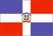

{kind=link}


![[Country map of Dominican Republic]](../maps/dr-map.jpg)
| Dominican Republic |  |
|
| | |
| Introduction |
Background: A legacy of unsettled, mostly non-representative, rule for much of the 20th century was brought to an end in 1996 when free and open elections ushered in a new government.
| Geography |
Location: Caribbean, eastern two-thirds of the island of Hispaniola, between the Caribbean Sea and the North Atlantic Ocean, east of Haiti
Geographic coordinates: 19 00 N, 70 40 W
Map references: Central America and the Caribbean
Area:
total:
48,730 sq km
land:
48,380 sq km
water:
350 sq km
Area - comparative: slightly more than twice the size of New Hampshire
Land boundaries:
total:
275 km
border countries:
Haiti 275 km
Coastline: 1,288 km
Maritime claims:
contiguous zone:
24 nm
continental shelf:
200 nm or to the edge of the continental margin
exclusive economic zone:
200 nm
territorial sea:
6 nm
Climate: tropical maritime; little seasonal temperature variation; seasonal variation in rainfall
Terrain: rugged highlands and mountains with fertile valleys interspersed
Elevation extremes:
lowest point:
Lago Enriquillo -46 m
highest point:
Pico Duarte 3,175 m
Natural resources: nickel, bauxite, gold, silver
Land use:
arable land:
21%
permanent crops:
9%
permanent pastures:
43%
forests and woodland:
12%
other:
15% (1993 est.)
Irrigated land: 2,300 sq km (1993 est.)
Natural hazards: lies in the middle of the hurricane belt and subject to severe storms from June to October; occasional flooding; periodic droughts
Environment - current issues: water shortages; soil eroding into the sea damages coral reefs; deforestation; Hurricane Georges damage
Environment - international agreements:
party to:
Biodiversity, Climate Change, Desertification, Endangered Species, Marine Dumping, Marine Life Conservation, Nuclear Test Ban, Ozone Layer Protection, Ship Pollution
signed, but not ratified:
Law of the Sea
Geography - note: shares island of Hispaniola with Haiti (eastern two-thirds is the Dominican Republic, western one-third is Haiti)
| People |
Population: 8,442,533 (July 2000 est.)
Age structure:
0-14 years:
34% (male 1,486,902; female 1,422,977)
15-64 years:
61% (male 2,609,934; female 2,518,330)
65 years and over:
5% (male 192,254; female 212,136) (2000 est.)
Population growth rate: 1.64% (2000 est.)
Birth rate: 25.15 births/1,000 population (2000 est.)
Death rate: 4.72 deaths/1,000 population (2000 est.)
Net migration rate: -4.04 migrant(s)/1,000 population (2000 est.)
Sex ratio:
at birth:
1.05 male(s)/female
under 15 years:
1.04 male(s)/female
15-64 years:
1.04 male(s)/female
65 years and over:
0.91 male(s)/female
total population:
1.03 male(s)/female (2000 est.)
Infant mortality rate: 35.93 deaths/1,000 live births (2000 est.)
Life expectancy at birth:
total population:
73.2 years
male:
71.12 years
female:
75.38 years (2000 est.)
Total fertility rate: 3 children born/woman (2000 est.)
Nationality:
noun:
Dominican(s)
adjective:
Dominican
Ethnic groups: white 16%, black 11%, mixed 73%
Religions: Roman Catholic 95%
Languages: Spanish
Literacy:
definition:
age 15 and over can read and write
total population:
82.1%
male:
82%
female:
82.2% (1995 est.)
| Government |
Country name:
conventional long form:
Dominican Republic
conventional short form:
none
local long form:
Republica Dominicana
local short form:
none
Data code: DR
Government type: representative democracy
Capital: Santo Domingo
Administrative divisions: 29 provinces (provincias, singular - provincia) and 1 district* (distrito); Azua, Baoruco, Barahona, Dajabon, Distrito Nacional*, Duarte, Elias Pina, El Seibo, Espaillat, Hato Mayor, Independencia, La Altagracia, La Romana, La Vega, Maria Trinidad Sanchez, Monsenor Nouel, Monte Cristi, Monte Plata, Pedernales, Peravia, Puerto Plata, Salcedo, Samana, Sanchez Ramirez, San Cristobal, San Juan, San Pedro de Macoris, Santiago, Santiago Rodriguez, Valverde
Independence: 27 February 1844 (from Haiti)
National holiday: Independence Day, 27 February (1844)
Constitution: 28 November 1966
Legal system: based on French civil codes
Suffrage:
18 years of age, universal and compulsory; married persons regardless of age
note:
members of the armed forces and police cannot vote
Executive branch:
chief of state:
President Leonel FERNANDEZ Reyna (since 16 August 1996); Vice President Jaime David FERNANDEZ Mirabal (since 16 August 1996); note - the president is both the chief of state and head of government
head of government:
President Leonel FERNANDEZ Reyna (since 16 August 1996); Vice President Jaime David FERNANDEZ Mirabal (since 16 August 1996); note - the president is both the chief of state and head of government
cabinet:
Cabinet nominated by the president
elections:
president and vice president elected on the same ticket by popular vote for four-year term; election last held 16 May 1996, runoff election held 30 June 1996 (next to be held 16 May 2000)
election results:
Leonel FERNANDEZ Reyna elected president; percent of vote - Leonel FERNANDEZ Reyna (PLD) 51.25%, Jose Francisco PENA Gomez (PRD) 48.75%
Legislative branch:
bicameral National Congress or Congreso Nacional consists of the Senate or Senado (30 seats; members are elected by popular vote to serve four-year terms) and the Chamber of Deputies or Camara de Diputados (149 seats; members are elected by popular vote to serve four-year terms)
elections:
Senate - last held 16 May 1998 (next to be held NA May 2002); Chamber of Deputies - last held 16 May 1998 (next to be held NA May 2002)
election results:
Senate - percent of vote by party - NA; seats by party - PRD 24, PLD 3, PRSC 3; Chamber of Deputies - percent of vote by party - NA; seats by party - PRD 83, PLD 49, PRSC 17
Judicial branch: Supreme Court or Corte Suprema, judges are elected by a Council made up of legislative and executive members with the president presiding
Political parties and leaders:
Alliance for Democracy Party or APD [Maximilano Rabelais PUIG Miller, Nelsida MARMOLEJOS, Vicente BENGOA]; Anti-Imperialist Patriotic Union or UPA [Ignacio RODRIGUEZ Chiappini]; Democratic Quisqueyan Party or PQD [Elias WESSIN Chavez]; Democratic Union or UD [Fernando ALVAREZ Bogaert]; Dominican Communist Party or PCD [Narciso ISA Conde]; Dominican Liberation Party or PLD [Jose Tomas PEREZ]; Dominican Revolutionary Party or PRD [Hatuey DE CAMPS]; Dominican Worker's Party or PTD [Ivan RODRIGUEZ]; Independent Revolutionary Party or PRI [leader NA]; Liberal Party of the Dominican Republic or PLRD [Andres Van Der HORST]; National Progressive Force or FNP [Pelegrin CASTILLO]; National Veterans and Civilian Party or PNVC [Juan Rene BEAUCHAMPS Javier]; Popular Christian Party or PPC [Rogelio DELGADO Bogaert]; Social Christian Reformist Party or PRSC [Joaquin BALAGUER Ricardo]
note:
in 1983 several leftist parties, including the PCD, joined to form the Dominican Leftist Front or FID; however, they still retain individual party structures
Political pressure groups and leaders: Collective of Popular Organizations or COP
International organization participation: ACP, Caricom (observer), ECLAC, FAO, G-11, G-77, IADB, IAEA, IBRD, ICAO, ICFTU, ICRM, IDA, IFAD, IFC, IFRCS, IHO, ILO, IMF, IMO, Intelsat, Interpol, IOC, IOM, ISO (subscriber), ITU, LAES, LAIA (observer), NAM (observer), OAS, OPANAL, OPCW, PCA, UN, UNCTAD, UNESCO, UNIDO, UPU, WCL, WFTU, WHO, WMO, WToO, WTrO
Diplomatic representation in the US:
chief of mission:
Ambassador Roberto Bienvenido SALADIN Selin
chancery:
1715 22nd Street NW, Washington, DC 20008
telephone:
[1] (202) 332-6280
FAX:
[1] (202) 265-8057
consulate(s) general:
Boston, Chicago, Mayaguez (Puerto Rico), Miami, New Orleans, New York, Philadelphia, San Francisco, and San Juan (Puerto Rico)
consulate(s):
Detroit, Houston, Jacksonville, Mobile, and Ponce (Puerto Rico)
Diplomatic representation from the US:
chief of mission:
Ambassador Charles MANATT
embassy:
corner of Calle Cesar Nicolas Penson and Calle Leopoldo Navarro, Santo Domingo
mailing address:
Unit 5500, APO AA 34041-5500
telephone:
[1] (809) 221-2171
FAX:
[1] (809) 686-7437
Flag description: a centered white cross that extends to the edges divides the flag into four rectangles - the top ones are blue (hoist side) and red, and the bottom ones are red (hoist side) and blue; a small coat of arms is at the center of the cross
| Economy |
Economy - overview: In December 1996, incoming President FERNANDEZ presented a bold reform package for this Caribbean economy - including the devaluation of the peso, income tax cuts, a 50% increase in sales taxes, reduced import tariffs, and increased gasoline prices - in an attempt to create a market-oriented economy that can compete internationally. Even though most reforms are stalled in the legislature - including the intellectual property rights bill, social security reform, and a new electricity law first submitted in 1993 - the economy has grown vigorously under FERNANDEZ's administration. Construction, tourism and telecommunications are leading the advance. The government is working to increase electric generating capacity, a key to continued economic growth; the state electricity company was finally privatized following numerous delays. The continuation of this vigorous growth in 2000 will depend on the policies adopted by the new administration.
GDP: purchasing power parity - $43.7 billion (1999 est.)
GDP - real growth rate: 8.3% (1999 est.)
GDP - per capita: purchasing power parity - $5,400 (1999 est.)
GDP - composition by sector:
agriculture:
13.6%
industry:
30.8%
services:
55.6% (1998 est.)
Population below poverty line: 25% (1999 est.)
Household income or consumption by percentage share:
lowest 10%:
1.6%
highest 10%:
39.6% (1989)
Inflation rate (consumer prices): 5.1% (1999)
Labor force: 2.3 million to 2.6 million
Labor force - by occupation: services and government 58.7%, industry 24.3%, agriculture 17% (1998 est.)
Unemployment rate: 13.8% (1999 est.)
Budget:
revenues:
$2.3 billion
expenditures:
$2.9 billion, including capital expenditures of $867 million (1999 est.)
Industries: tourism, sugar processing, ferronickel and gold mining, textiles, cement, tobacco
Industrial production growth rate: 6.3% (1995 est.)
Electricity - production: 8.476 billion kWh (1998)
Electricity - production by source:
fossil fuel:
72.04%
hydro:
27.62%
nuclear:
0%
other:
0.34% (1998)
Electricity - consumption: 7.883 billion kWh (1998)
Electricity - exports: 0 kWh (1998)
Electricity - imports: 0 kWh (1998)
Agriculture - products: sugarcane, coffee, cotton, cocoa, tobacco, rice, beans, potatoes, corn, bananas; cattle, pigs, dairy products, beef, eggs
Exports: $5.1 billion (f.o.b., 1999)
Exports - commodities: ferronickel, sugar, gold, silver, coffee, cocoa, tobacco, meats
Exports - partners: US 61.6%, Belgium 11.1%, Asia 5.9%, Canada 2.9% (1998 est.)
Imports: $8.2 billion (f.o.b., 1999)
Imports - commodities: foodstuffs, petroleum, cotton and fabrics, chemicals and pharmaceuticals
Imports - partners: US 56%, Venezuela 23%, Mexico 9%, Japan 4% (1999 est.)
Debt - external: $3.7 billion (1999 est.)
Economic aid - recipient: $239.6 million (1995)
Currency: 1 Dominican peso (RD$) = 100 centavos
Exchange rates: Dominican pesos (RD$) per US$1 - 16.161 (January 2000), 16.033 (1999), 15.267 (1998), 14.265 (1997), 13.775 (1996), 13.597 (1995)
Fiscal year: calendar year
| Communications |
Telephones - main lines in use: 569,000 (1995)
Telephones - mobile cellular: 33,000 (1995)
Telephone system:
domestic:
relatively efficient system based on islandwide microwave radio relay network
international:
1 coaxial submarine cable; satellite earth station - 1 Intelsat (Atlantic Ocean)
Radio broadcast stations: AM 120, FM 56, shortwave 4 (1998)
Radios: 1.44 million (1997)
Television broadcast stations: 25 (1997)
Televisions: 770,000 (1997)
Internet Service Providers (ISPs): 1 (1999)
| Transportation |
Railways:
total:
757 km
standard gauge:
375 km 1.435-m gauge (Central Romana Railroad)
narrow gauge:
142 km 0.762-m gauge (Dominican Republic Government Railway); 240 km operated by sugar companies in various gauges (0.558-m, 0.762-m, 1.067-m gauges) (1995)
Highways:
total:
12,600 km
paved:
6,224 km
unpaved:
6,376 km (1996 est.)
Pipelines: crude oil 96 km; petroleum products 8 km
Ports and harbors: Barahona, La Romana, Puerto Plata, San Pedro de Macoris, Santo Domingo
Merchant marine:
total:
1 ship (1,000 GRT or over) totaling 1,587 GRT/1,165 DWT
ships by type:
cargo 1 (1999 est.)
Airports: 28 (1999 est.)
Airports - with paved runways:
total:
13
over 3,047 m:
3
2,438 to 3,047 m:
1
1,524 to 2,437 m:
4
914 to 1,523 m:
3
under 914 m:
2 (1999 est.)
Airports - with unpaved runways:
total:
15
1,524 to 2,437 m:
2
914 to 1,523 m:
4
under 914 m:
9 (1999 est.)
| Military |
Military branches: Army, Navy, Air Force, National Police
Military manpower - military age: 18 years of age
Military manpower - availability:
males age 15-49:
2,239,309 (2000 est.)
Military manpower - fit for military service:
males age 15-49:
1,405,845 (2000 est.)
Military manpower - reaching military age annually:
males:
86,569 (2000 est.)
Military expenditures - dollar figure: $180 million (FY98)
Military expenditures - percent of GDP: 1.1% (FY98)
| Transnational Issues |
Disputes - international: none
Illicit drugs: transshipment point for South American drugs destined for the US and Europe